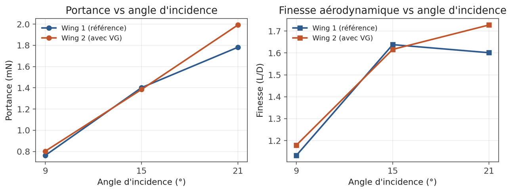

CFD Aerodynamic Analysis: Wing Profiles & Vortex Generators

Comparative numerical wind-tunnel investigation simulating a baseline airfoil (Wing 1) against a vortex generator-equipped wing (Wing 2) across angles of incidence of 9°, 15°, and 21°. Quantified boundary layer re-energization, turbulent kinetic energy (k), pathline stall delays, and an 8% lift-to-drag (L/D) gain at high incidence.
Ansys Fluent
Ansys Discovery
Ansys Meshing
Boundary Layer Control
Turbulence Kinetic Energy (k)
Pressure-Based Solver